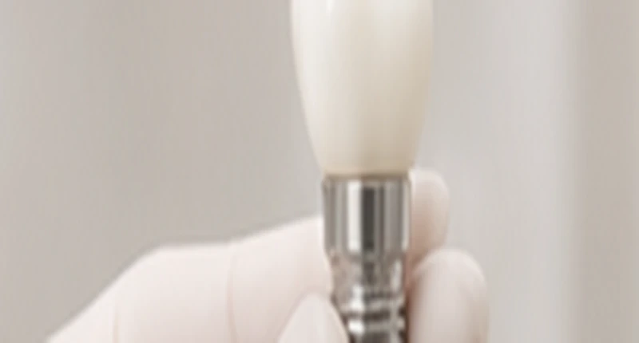

Официальная гарантия
Заключаем договор. Гарантию на имплант обеспечивает производитель.
Открытый прайс · Астана
Цены указаны в тенге. Итоговую стоимость рассчитывает имплантолог после консультации и диагностики.
Стоимость услуг
Раскройте нужный раздел. Дополнительные процедуры и протезная часть рассчитываются индивидуально по плану лечения.
Отдельный прайс на восстановление зубного ряда — на специальной странице.
Условия лечения
Заключаем договор. Гарантию на имплант обеспечивает производитель.
Оплатите имплантацию в рассрочку через Kaspi 0-0-24.
При оплате наличными действует дополнительная скидка. Размер скидки и итоговую стоимость рассчитывает имплантолог на консультации.
Полный прайс-лист клиники
Напишите в WhatsApp, чтобы получить полный список услуг и цен клиники.
Врач подберёт вариант лечения и рассчитает итоговую стоимость.
Ждём вас
